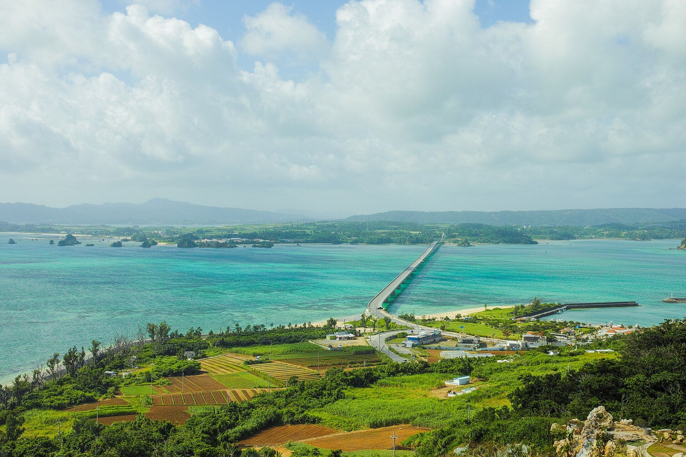
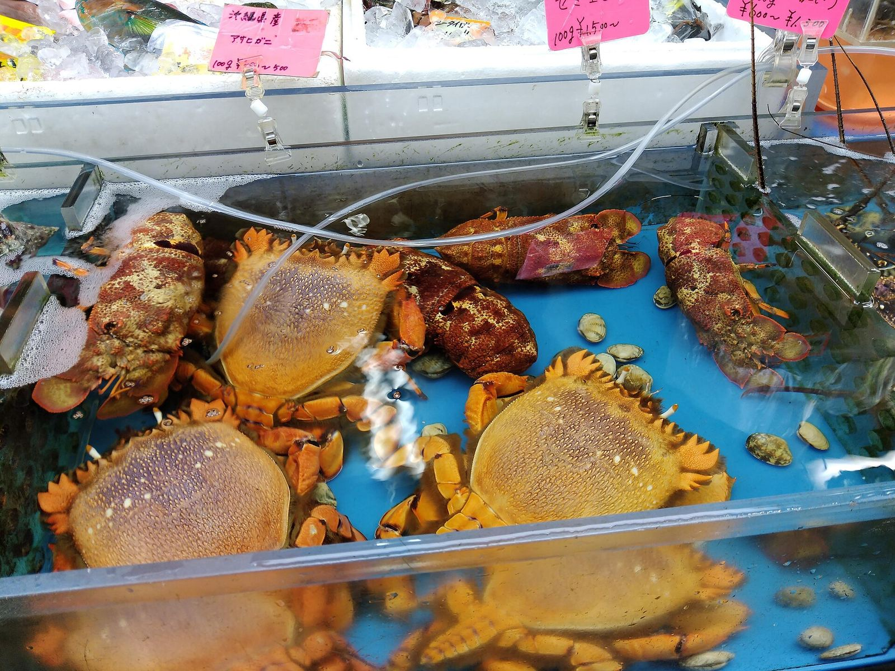
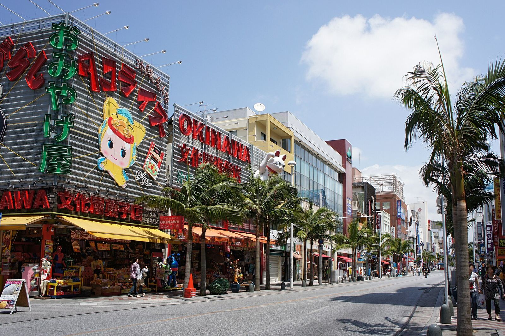

去程 · 樂桃航空MM930
TPE桃園 T1
OKA那霸
18:2020:50
只有隨身 7 kg，不含託運。回程有買東西就上官網加購託運。
出發11/11週三

2026.11.11 → 11.15兩人自駕・定案版
西岸北上、山原折返、東岸南下。那霸 1 晚 → 名護 2 晚 → 那霸 1 晚，每天核心行程不超過兩個，開車盡量在天黑前結束。
照片：古宇利大橋 · Takuya ASADA · CC BY 2.0
機票、租車、三間住宿全部訂好了。整趟只有兩個時間不能動：11/12 09:00 取車、11/14 15:30 還車。
只有隨身 7 kg，不含託運。回程有買東西就上官網加購託運。
報到起飛前 50 分鐘截止，也就是 07:25。06:40 到機場。
行程主軸 落地休息 → 魚大統領早午餐 → 美麗海鯨鯊 → 花人逢夕陽 → 本部牛燒肉 → 本島最北端邊戶岬 → 古宇利大橋 → 阿古豬涮涮鍋 → 海中道路 → 浜辺の茶屋 → 國際通採買 → 早班機回家。
逆時針繞本島一圈，每天一種顏色。邊戶岬到古宇利是唯一往回開的一段。點站名可以直接跳到那一天。
左邊是每天的站牌：今天在哪、從哪來、往哪去。旅途中打開，今天的站牌和現在進行到的那一格會自動標出來。
只有隨身行李，液體和行動電源照一般規定。
入境加海關約 40 分鐘。沒有託運行李，出關會很快。
宵夜在旭橋、久茂地一帶的居酒屋隨意吃，睡飽才是今天的重點。
落地已經九點多，吃什麼都好。明天 08:45 退房，走 5 分鐘就到租車櫃檯。
約 5 分鐘，走外語對應專用櫃檯。
上路前做三件事：問 ETC 卡要不要租、看油量、車身既有刮痕拍照存證。
漁港旁的食堂，鮪魚下巴、生魚片丼、炸魚定食份量都大。提早幾分鐘到，排第一輪。
老聚落裡的福木防風林，綠蔭成拱。走 40 分鐘消化一下，順便避開水族館的正午人潮。
主角是黑潮之海大水槽的鯨鯊。停車場下來有一段長手扶梯，下行時整片海在眼前展開，留點時間拍照。逛到 16:00。
紅瓦古民家俯瞰伊江島，17:40 日落前光線最好。只點飲料，留胃給晚上的燒肉。
本部牛的牧場直營本店，同一個牧場在那霸的分店晚餐要貴一倍。點「もとぶ牛食べ比べ」一次吃 8 種部位，再加一盤和牛內臟。
車停飯店，連住兩晚，明早直接出發。
導航設水族館 P7 立體停車場，離入口最近。整個海洋博公園停車都免費。
燒肉後還要開 30 分鐘回名護。日本酒駕零容忍，乘客明知駕駛喝了酒還同車也會受罰。想喝的那位可以喝，開車的那位點烏龍茶。
下午是人潮高峰。想拍黑潮之海就先直奔大水槽，其他展區回頭再看。花人逢最後一段是窄坡道，下山時天色漸暗，會車慢慢來。
先在券売機買餐券，沒有英文菜單。中午後常排 30 分鐘以上。
名護店週四公休，11/12 剛好週四，所以吃本部店。可網路訂位。
隆起珊瑚礁斷崖，太平洋與東海在腳下交會。步道平緩，散步 40 分鐘，天氣好看得到與論島。
長壽村在地食材做的定食，清爽不油，替晚上的阿古豬留胃。
開過跨海大橋時海水是漸層的。別只是開過去，找停車位下來走一段，再去海景露台吃現烤布蕾配咖啡。島上抓 2 小時。
不用搬行李。要洗衣服的話，名護市區有自助洗衣店，開車 10 分鐘內。
七十年屋齡的古民家，島黑阿古豬涮涮鍋，整趟最好的一餐。
營業時間電話不好打通，12:00–16:30 打最容易接通。當天取消收全額，超過預約時間 15 分鐘視同取消。週日公休，11/13 是週五沒問題。
只開週五到週一。部分介紹寫餐點要前一天預約，出發前打 0980-44-3220 確認並訂位。
不去邊戶岬，改在古宇利、備瀨一帶慢慢晃，開車時間從 3 小時降到 1.5 小時。岬角風大，薄外套帶著。PARITTHI 熱門品項下午會賣完，15:30 前進店。
整條海上公路開過去，中段 Road Park 停 20 到 30 分鐘拍照就走。滿潮時兩側都是海最漂亮。
市場買刺身拼盤和魚湯在港邊吃，隔壁中本外帶一包現炸魚天婦羅，兩個人吃很飽。
沖繩海景咖啡的元祖，搶窗邊長吧台。點琉球花紅茶配手作司康或紫芋起司蛋糕，13:30 起身。
只有 50 分鐘，直接試穿目標型號，14:55 一定要走。正對面的 ASHIBINAA 暢貨中心這次沒時間逛。
預約時間寫死在 15:30，15:25 前到店。滿油還車並保留加油收據，費用現場結清。
從還車處走 8 分鐘。行李、鞋盒全部放好，兩手空空出門。
沖繩名物，傍晚就打烊，所以一到牧志先來買。當下午點心，或留一顆明早在機場吃。
國際通買伴手禮、紅芋塔、泡盛、黑糖 → 轉進平和通與市場本通的有頂商店街，藥妝比大街便宜 → 壺屋やちむん通挑陶器 → 回到公設市場。
1 樓鮮魚攤挑魚、夜光貝、龍蝦，拿上 2 樓請店家做成刺身、煎或煮。最後一晚吃好吃滿。
把戰利品打包好，明天 06:20 出門。櫃檯 22:00 關，時間綽綽有餘。
豐崎一定 14:55 離開。加油站選還車路線上的，收據留著，櫃檯可能要看。
明天 06:40 就到機場，沒有時間採買。陶器請店家包好，隨身帶上飛機。
櫃檯 06:00 起辦理。行李前一晚就打包完。
約 11 分鐘。首班車 6 點過後發車，出發前查官網時刻表。萬一睡過頭，計程車約 15 分鐘到機場。
時間很寬裕，買杯咖啡配昨天的飯糰。
樂桃在起飛前 50 分鐘關櫃，晚一分鐘都不能上。
08:55 抵達桃園，9 點前就到家。
11/1 起的新制要在機場海關確認商品後才退款，早班機排隊時間難抓。金額不大就別辦了，詳見「購物與退稅」。
三間住宿都是 2 位成人、1 間房，全部訂好了。取消期限列在下面，要改行程就在期限前決定。
那霸市西 1-20-19
名護市宮里 453-1 · 0980-53-0031
那霸市東町 19-13
台灣駕照正本＋監理站日文譯本＋護照，缺一樣就不交車。
報預約號 ••••3845，已加購快速取車，手續較快。
ETC 卡預約單沒列，當場問要不要租。看油量、車身刮痕拍照。
11/14 15:25 前到。滿油，收據留著。費用在店舖現場結帳，可刷卡。
把手機給店員看就好（一般汽油，加滿）：
レギュラー、満タンで
お願いします
沖繩加油站多半是自助式，也有全套服務。自助式先選「レギュラー（紅色油槍）」。
海鮮 3 餐、本部牛燒肉 1 餐、阿古豬 1 餐、海景咖啡 3 次。真正非訂不可的只有一家，另外兩家建議先訂。

D4 午餐可改糸滿「港町パーラー」海鮮丼（11:00–15:00，賣完為止）；D4 下午咖啡可改「山の茶屋 楽水」（週三四休）。只收現金的是花人逢和笑味の店，路邊小攤和在地老店也多半只收現金。
購物全部集中在 D4 下午到晚上。退稅制度 11/1 剛改，先看清楚再決定要不要辦。

店內付含稅價，出境時在保安檢查前的海關確認商品，而且要在託運行李之前完成，確認後才退款。退款用的信用卡要先登記，建議出發前在 Visit Japan Web 登錄。新制同時取消消耗品的密封包裝與 50 萬圓上限。
但這班機太早了。11/15 08:15 起飛、06:40 才到機場，加上早班機人潮，很可能來不及。金額不大就別辦；真要辦，出門時間提前到 06:00。
勾選狀態只存在這支手機（或這台電腦）的瀏覽器裡。
過了期限取消就收全額。要改行程就在這些日子之前決定。
天氣、開車、禮儀，和萬一需要的電話。
沙灘上的貝殼、珊瑚不可撿拾帶走，違規會開罰；垃圾隨身帶走。
美國村：晚上點燈才好逛，但 11/14 15:30 就還車，晚上沒車。鳳梨園：偏親子團客，D3 回程已接近閉園。PARCO CITY：在浦添，還車後單軌到不了，要去只能擠掉 On 鞋或國際通。